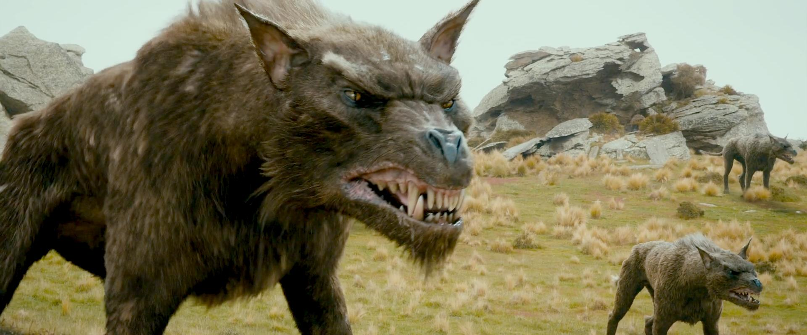

Wargowie, wilkołaki (ang. Wargs, Werewolves) – rasa inteligentnych, olbrzymich wilków, wyhodowanych w Dawnych Dniach przez Morgotha, służących jemu, Sauronowi oraz Sarumanowi. Wydaje się, że były to zdeprawowane wilki, w których zamieszkały złe duchy, lub też potomkowie umajarów, posiadające swoją fea. Wywodzili się od Draugluina. Wykorzystywane przez orków jako wierzchowce.
W Pierwszej Erze wargowie byli znaczną siłą, wchodzącą w skład armii Morgohta. Brali udział w wojnach o Beleriand. Wielu z nich zostało wytępionych po Wojnie Gniewu, niektóre jednak przetrwały i służyły Sauronowi. W Trzeciej Erze wargowie licznie zamieszkiwali dzikie pustkowia Śródziemia, szczególnie na północy i w Górach Mglistych. Wzięli udział w Wojnie o Pierścień, walcząc po stronie Saurona i Sarumana.

W 2941 roku wargowie pod przywództwem wielkiego szarego wilka napadli na kompanię Thorina w Górach Mglistych[1]. Po ucieczce krasnoludów, razem z goblinami patrolowali tereny w pobliżu gór, w poszukiwaniu uciekinierów[2]; później znaczna ich liczba wzięła udział w Bitwie Pięciu Armii[3].